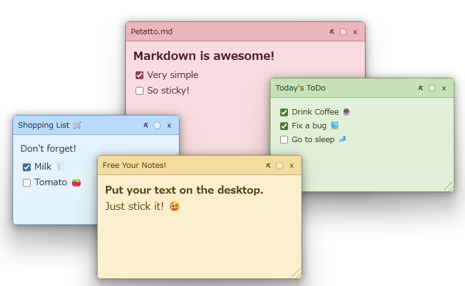
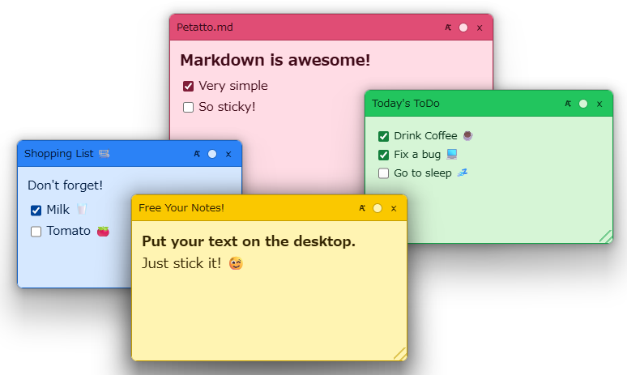
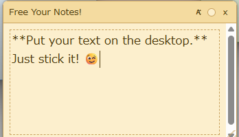
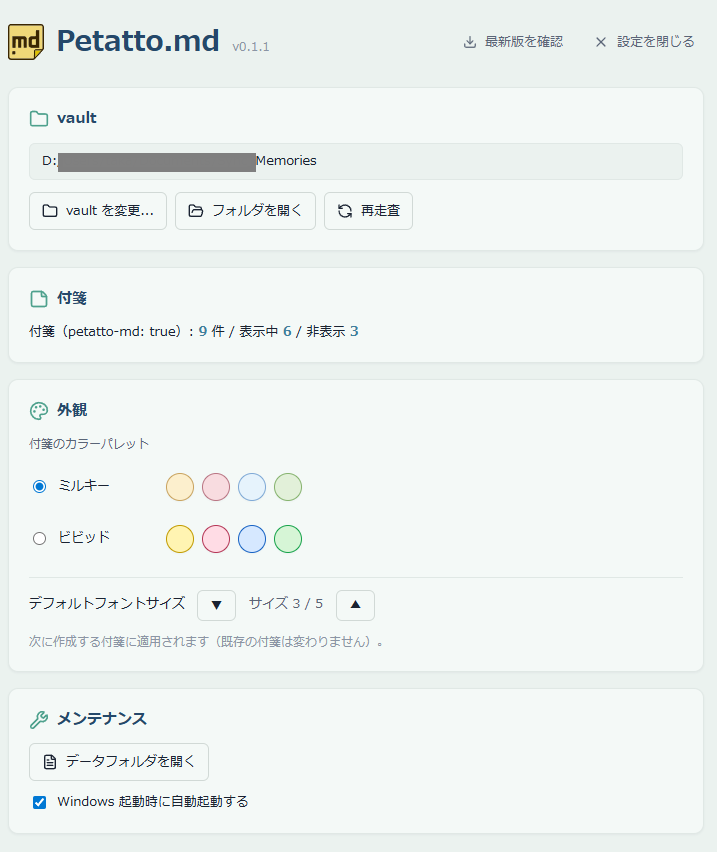
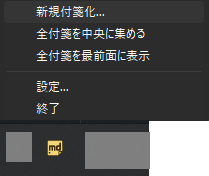
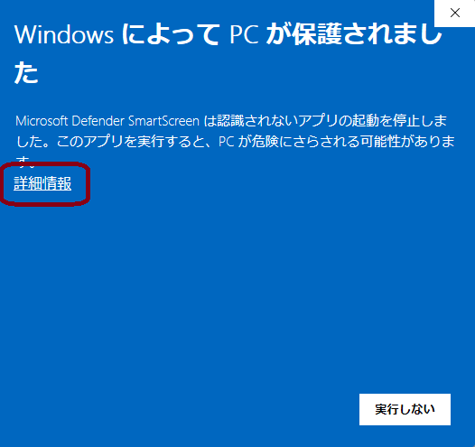

🏷️
frontmatter フラグだけ
petatto-md: true を md に書くだけで付箋化。アプリ状態は md を汚しません。
Obsidian × Windows デスクトップ
Obsidian vault の Markdown（.mdファイル）を、Windows デスクトップに付箋として貼り付け。 TODO・進行中タスク・今見ておきたいメモを、いつも目に入る場所へ。

編集の主は Obsidian。Petatto.md は「眺める・チェックする」ための常駐ビューです。
petatto-md: true を md に書くだけで付箋化。アプリ状態は md を汚しません。
ミルキー / ビビッドの 2 テーマ、各 4 色を巡回。気分やカテゴリで色分け。
- [ ] をクリックで切替。付箋の上でそのまま TODO を消化できます。
Obsidian 側で保存すると即反映。常に最新のメモがデスクトップに。
タスクバーを占有せず、トレイから一括表示・整列・最前面化。
テレメトリ・使用状況・解析を一切送信しません。すべて端末内で完結。
付箋・メインウィンドウ・トレイ。実際の画面です。





Obsidian を持っていれば、すぐに始められます。
起動して「vault フォルダを選ぶ」から Obsidian vault のルートを指定します。
トレイの「新規付箋化…」で md を選ぶか、frontmatter に petatto-md: true を書きます。
付箋が現れます。ドラッグで移動、四辺でリサイズ、チェックは付箋の上で。
---
petatto-md: true
---
# 今週のタスク
- [ ] 月曜のミーティング資料を作る
- [x] 経費精算
- [ ] 〇〇さんに返信表示モードで描画される要素。非対応要素はプレーンテキストとして安全に表示されます（クラッシュしません）。
Windows 10 / 11（x64）向けの MSI インストーラ。無料です。
コード署名をしていないため、初回起動時に「Windows によって PC が保護されました」が表示されます。 「詳細情報」→「実行」で続行できます（自己責任の前提）。

必須ではありませんが、付箋化対象の md を作成・編集するのに想定しています。frontmatter に petatto-md: true を持つ md であれば、どのエディタで作っても構いません。
現在、アプリ本体の UI は日本語のみで、英語 UI は今後対応予定です。（本サイトは日英対応ですが、アプリ内の表示は日本語になります。）優先度の参考にするので、ご希望の方は GitHub Issue「UI翻訳」への 👍 で教えてください。
いいえ。色・位置・サイズはアプリ側の SQLite に保存され、md には petatto-md: true フラグ以外を書きません。Obsidian 側を汚しません。
送信しません。テレメトリ・使用状況・解析は一切収集しません。更新確認（手動ボタン）時だけ「新しいバージョンがあるか」を問い合わせますが、利用状況は含みません。
消えません。付箋ヘッダの「×」は frontmatter の petatto-md: true を削除するだけで、md ファイル自体は残ります。
現在は Windows 10 / 11（x64）のみ対応しています。
個人・組織内のいずれの利用でも無料です。再配布・改変・リバースエンジニアリングは禁止されています（独自 EULA）。